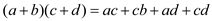

a.
To multiply two linear polynomials and using only 3 multiplications:

So, compute ac and cd. Thus, the product of two polynomials is as follows:
b.
For first method, that is, the algorithm to divide the input polynomial coefficients into a high half and low half is as follows:
Suppose that two polynomials are required to be multiplied and
let the two polynomials be  and
and
 such that,
and . The high
half will be set as:
such that,
and . The high
half will be set as:
and the low half will be set as:  for
i =1,2….
for
i =1,2….
Since, it is known that for i =1,2…and so on.
Thus, by multiplication of two polynomials:
So, by using master’s theorem the recurrence to calculate the running time is as follows:
For the second algorithm, that is, to divide the input polynomial coefficients according to whether the index is even or odd the procedure is as follows:
Let the odd index be denoted by and even
index be denoted by  such that,
and for
i=1,2…
such that,
and for
i=1,2…
Then, for the polynomials
Therefore,
Therefore, the recurrence relation for the above algorithm is:
c.
To multiply two n-bit integers in steps, the two integers which are taken are:
and . The generalization of the polynomial is:
.
Thus, the two n-bit integers are taken as: and where and . The andrepresent the number on every digit i = {1,2,3…n}
By using divide and conquer, the two algorithms are designed to
solve the polynomial multiplication problem with run time of
.
For each operation, deal with either or, they are
of 1 bit values.
a.
The sum of two Toeplitz matrices is Toeplitz. Suppose there are 2 matrices A and b.
In A, for i, j = 2…n. Similarly, in B, . Suppose the resultant matrix is C. Then, the sum of the values will also be equal to .
But, the product will not be Toeplitz matrix. It is shown below using an example:
The resultant matrix is not Toeplitz matrix.
b.
In a Toeplitz matrix only values of first column and first row needs to be calculated. Other values will be same due to the only property of Toeplitz matrix.
To do this, add first rows of both matrix that can be added in O(n) time like adding any 2 row vectors. Then add first columns of both matrix like adding 2 column vectors. It can also be done in O(n) time.
thus, the total time for addition will be 2O(n) = O(n) time.
c.
To solve this problem, use divide and conquer approach. A matrix can be interpreted as polynomials and the resultant matrix can be found through multiplication of polynomials.
The algorithm is given below:
Algorithm:
1. Write matrix A as polynomial P1(x) = .
2. Let the vector B be .
3. Write B as P2(x) = .
4. A(x)B(x) =
5. Use divide and conquer method as follows.
6. PolynomialMulti(A(x),B(x))
7. {
8.
9.
10.
11.
12. Mul1(x) = PolynomialMulti(A0(x),B0(x))
13. Mul2(x) = PolynomialMulti(A0(x),B1(x))
14. Mul3(x) = PolynomialMulti(A1(x),B0(x))
15. Mul4(x) = PolynomialMulti(A1(x),B1(x))
16. return
17. }
Explanation:
Since, multiplication follows O(n log n) time. Thus, the total time of this algorithm is O(n log n).
d.
Same algorithm will be used for multiplication of 2 matrices. Write both matrices in polynomial form and multiply. Since, multiplication of polynomial takes follows O(n log n) time. Thus, the total time of this algorithm is O(n log n).
a. The normal discrete Fourier transforms a one dimensional
series which will
be a function of only one discrete variable .The
multidimensional discrete Fourier transform of a given
multi-dimensional array which is a
series having function of d discrete variable for
.The
multidimensional discrete Fourier transform of a given
multi-dimensional array which is a
series having function of d discrete variable for
 in
is
given by:
in
is
given by:
Here,
And  expands up
to
expands up
to
 Similarly
it can be done for other d dimensional DFT.
Similarly
it can be done for other d dimensional DFT.b. While calculating discrete Fourier transform for d dimensions, it is found that the ordering of dimension will not matter while computing a d-dimensional DFT by computing the 1 dimensional DFT.
Suppose discrete Fourier transform is calculated for series in
which expands up
to:
Now, break the series of k in any order, say0 to 100 and the rest in the other. It would not put an effect as the total factor will sum up to the above given series. Each and every dimension is independent of one another.
c. To compute a 1-dimensional DFT using fast Fourier transform,
the time taken will be.It is so
because as seen in the above parts computing a single sequence
would involve elements and
we compute the single equation say for n number of
dimension. This sums up the total complexity to .
.
This concludes that the running time of the procedure would
be.
FFT using Modular arithmetic
The complex numbers are computed by using discrete Fourier transform. But it results into loss of precision. It is because of rounding-off integers. If FFT is used by using modular arithmetic, then the result will be more exact. Fast Fourier transform is an algorithm to calculate Discrete Fourier Transform (DFT) and also to calculate inverse discrete Fourier transform. Fourier transformation changes time to frequency and frequency to time. It is one of the important numerical algorithms.
a.
Heuristic argument that  to be
approximately: Consider
the prime number p given below:
to be
approximately: Consider
the prime number p given below:
It is clear that multiplication of integers (k and n) is there. For this, the time taken by modular arithmetic will be . In FFT circuit, use of butterfly operations is there instead of comparators. For butterfly operations, refer to the figure 30.3 from textbook.
In this case, the depth notation is applied. According to this depth notation, for n inputs, bit-reverse permutation will be there. Also the number of stages that will be followed equals to . If there is execution of n/2 butterflies in parallel form, then depth will be equal to
b.
To show that discrete Fourier transform and inverse Fourier transform are inverse operation, consider the Fourier transform and its inverse given below:
Here,  is principal
root of unity. The summation of this can be given as:
is principal
root of unity. The summation of this can be given as:
Now, to show that they are well defined inverse, consider the equation given below:
c.
By using, arithmetic over complex numbers, running time achieved
will equal to . For
increasing efficiency, the running time can be obtained up to
bit
operations by using arithmetic modulo. Now, showing FFT and inverse
of FFT works modulo  work in time
.
work in time
.
FFT and inverse FFT work in same manner,
As (g is the generator).
All are in modulo p. There execution takes place of a single transformation in time. There are a total of n numbers. So, when is added n times, the result obtained will be equal to.
d.
The DFT modulo with the vector
For a given prime number
As there are 8 vectors of the prime number, the value of n will be 8. Putting the respective values:
For the given generator
Thus the DFT modulo p will be equal to 9.